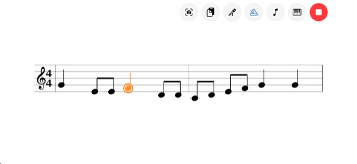
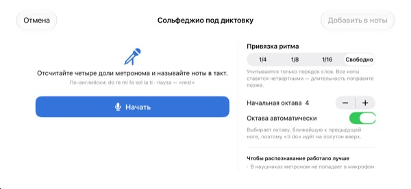
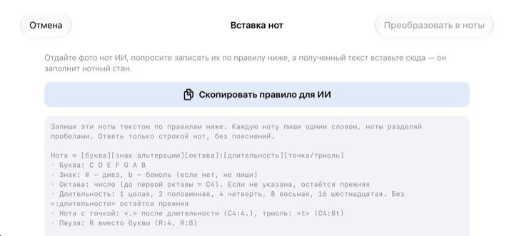

Хватит считать в уме.
Просто послушайте.
Перепишите два такта, на которых вы спотыкаетесь, и нажмите «Воспроизвести». После такта отсчёта приложение сыграет их под метроном, ровно в том ритме и с той высотой, как написано.
Все функции бесплатны. Для iPhone и iPad.

Запишите пару нот и послушайте
Нажмите на нотный стан и ведите пальцем вверх или вниз, чтобы сменить ноту, отпустите, чтобы поставить её. Нажмите «Играть»: после такта отсчёта зазвучит музыка. Будет звук, проверьте громкость.
Снова сбились со счёта посреди такта?
Восьмая с точкой, за ней шестнадцатая, а рядом триоль. Отстукиваете по колену и где-то посередине сбиваетесь. А накануне репетиции хора пианино под рукой обычно нет. В StaffSinger достаточно переписать эти два такта, и вы услышите точный ритм и высоту.
Точный ритм и высота, как в нотах
После такта отсчёта музыка звучит под щелчки метронома, а звучащая нота подсвечивается оранжевым. Темп от 40 до 200 BPM, размер 4/4, 3/4, 2/4, 6/8, 2/2 или 3/8.
Ноты на одной доле звучат вместе как аккорд, а записать можно до трёх голосов. Есть скрипичный, альтовый и басовый ключи и ключевые знаки.

Пропойте названия нот, и они станут нотами
После четырёх щелчков метронома произносите do re mi в такт, и ноты появятся на стане. Если попадать в долю, длительности тоже запишутся: четверти, восьмые или шестнадцатые. Для паузы скажите rest.
Названия нот произносите по-английски. Речь распознаётся только на устройстве и не сохраняется.

Фото нот отдайте ИИ, а результат вставьте
Нажмите Скопировать правило для ИИ, передайте его ИИ вместе с фотографией нот и вставьте полученный текст. Нотный стан заполнится сам. Формат приведён в таблице ниже.
Можно и сфотографировать бумажные ноты, держать снимок на экране и переписывать, глядя на него.

Три шага, чтобы начать
- 1
Выберите трудные такты
Приложение открывается с пустым станом на два такта.
- 2
Запишите ноты
Нажимайте на стан или играйте на клавиатуре фортепиано.
- 3
Нажмите «Воспроизвести»
Отсчёт, затем воспроизведение под метроном.
Формат текста для вставки
- C4:4
- до первой октавы (в записи C4), четвертная
- D:8
- Без октавы сохраняется предыдущая
- F#4:8 · Bb4:4
- # — диез, b — бемоль
- E4
- Без «:длительности» сохраняется предыдущая
- :1 · :2 · :4 · :8 · :16
- целая, половинная, четвертная, восьмая, шестнадцатая
- C4:4.
- нота с точкой
- C4:8t
- триоль
- R:4 · R:8
- паузы
Кнопка «Скопировать правило для ИИ» в приложении копирует именно эти инструкции. Ноты разделяются пробелами.
Все функции бесплатны
Бесплатно
- Ввод на нотном стане и клавиатура на две октавы
- Воспроизведение с отсчётом и метрономом
- Аккорды и три голоса
- Ключевые знаки и три ключа
- Диктовка названий нот голосом
- Вставка текстом и фото для сверки
Поддержать разработчика
- Небольшие чаевые можно отправить в настройках
- Чаевые не открывают никаких функций
Это не подписка. Каждые чаевые оплачиваются один раз.
Без рекламы и без регистрации.
Вопросы и ответы
Как ставить ноты?
Сначала выберите длительность на панели инструментов, затем нажмите на стан на нужной высоте. Пока держите палец, звучит нота, а когда отпустите, она добавится. Кнопка клавиатуры открывает фортепиано на две октавы.
Как сделать аккорд?
Включите кнопку «Аккорд» на панели и добавляйте ноты. Они встанут над выбранной нотой и прозвучат вместе.
Как исправить ноту?
Перетащите ноту вверх или вниз, чтобы изменить высоту, или вбок, чтобы сдвинуть на другую долю. Выбранную ноту кнопки ♯ ♭ сдвигают на полутон, а кнопки 8va на октаву.
Где менять темп и размер?
В настройках, там же ключ и ключевые знаки. Там же включаются метроном и отсчёт.
Нет звука.
Проверьте бесшумный режим и громкость медиа. Если не слышно только метронома, убедитесь, что он включён в разделе «Помощь при воспроизведении» в настройках.
Диктовка путает ноты.
Используйте наушники, чтобы щелчки метронома не попадали в микрофон, и произносите по одной ноте чётко и в долю. Неверную ноту можно просто перетащить.
Зачем приложению камера?
Только чтобы сфотографировать бумажные ноты и показывать снимок на экране для сверки. Фото не покидают устройство. Без доступа к камере можно выбрать снимок из медиатеки.
На каких устройствах работает?
На iPhone и iPad с iOS 17 и новее. Интерфейс рассчитан на горизонтальную ориентацию.
Отправляются ли куда-то мои ноты или голос?
Нет. Ноты, фото и голос остаются на устройстве, всё работает без интернета. В iCloud уходят только анонимная статистика использования и отчёты о сбоях, чтобы улучшать приложение.
Как связаться с разработчиком?
Напишите на leeo@kakao.com, обычно ответ приходит в течение 2–3 рабочих дней. Сообщения об ошибках и идеи можно оставить и в issues на GitHub: M1zz/StaffSinger.
Вопросы или отзывы? Пишите на leeo@kakao.com.